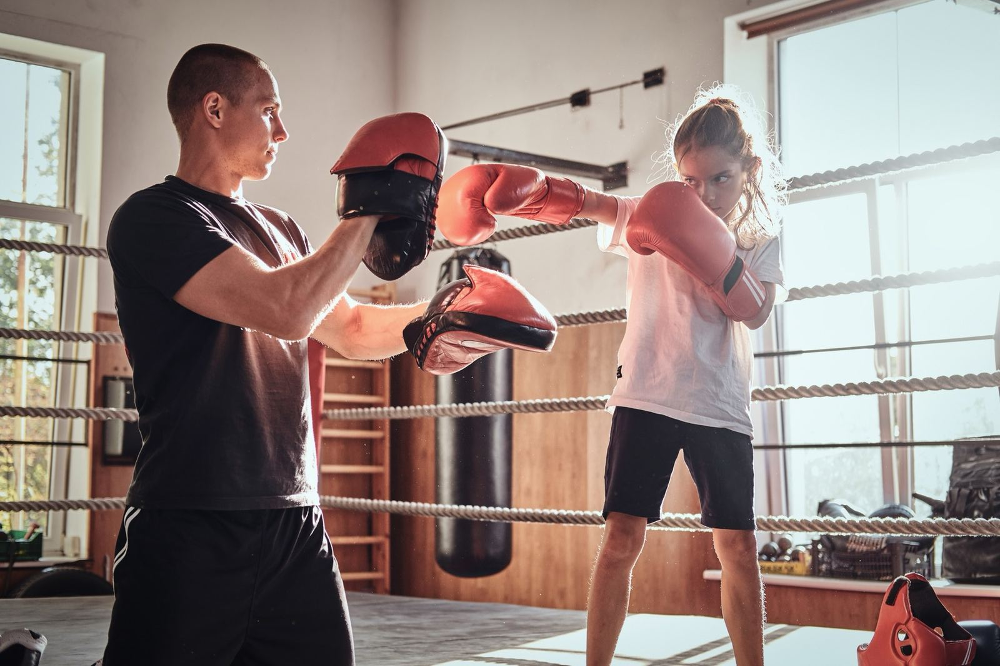

We develop grassroots leaders through practical training, ongoing coaching, and peer support networks.

Story of themStory of us
Our funded programme for youth workers in England, applying our Tackling Narratives of Division approach to the misogynist and far-right narratives targeting young men.
What it's for: Community leaders and organisers working in places where mistrust, misinformation or division are making it harder to bring people together.
What you'll learn: How to listen deeply, build relationships across difference, and organise around shared concerns rather than allowing frustration to be turned against other communities.
What it's for: Anyone organising informally or formally in their community — residents' groups, mutual aid, campaigns, faith groups and local networks.
What you'll learn: Core organising skills — one-to-ones, building power, running effective meetings, and turning shared concerns into sustained action.
What it's for: Community leaders, charity directors and volunteers who want space to reflect, solve problems and avoid burnout.
What you'll learn: Sustainable leadership practice, strategic thinking, and how to move from ambition to action without losing yourself in the process.
What it's for: Leaders and volunteers who want to reduce tech friction and use digital tools with confidence and care.
What you'll learn: Using social media effectively, using AI ethically, managing people digitally, managing data safely, and building income with tech — including hands-on use of Community Builder, Charity Builder and Policy Finder.